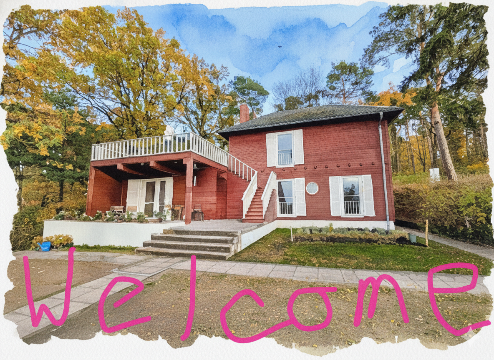

WALK in the footsteps of a genius and get inspired by Einstein. The summerhouse leaves a lasting
impression on countless visitors.Many visitors describe their time at the summerhouse as a truly moving
and inspiring experience.
GET INSPIRED BY EINSTEIN
The summerhouse

Step into the peaceful retreat where Albert Einstein spent his summers thinking big thoughts, sailing small boats, and
proving that bad hair is timeless. Here, relativity meets relaxation — the lake sparkles, ideas float, and time feels
deliciously bendy.
You can sit where genius once sat, stare at the same sky that inspired E = mc², and maybe even come up with your own
theory (like why your phone battery dies faster near beautiful scenery)..
The Summerhouse Highlights
If you're looking to soak up some genius ideas is this the right place.
It hits people wiht a sudden, refreshing realization; I don't need more gadgets to be creative; I need more silence.
If you're looking for a "get smart quick" scheme, standing in his hallway won't suddenly make you understand quantum entanglement. Howerver a
recalibration of hte soul, it is incredibly effective.
Einstein's garden
Tucked behind the famous summerhouse lies Einstein’s Garden — a quiet patch of green where the world’s most famous
thinker found calm among cabbages, cosmos, and cosmic thoughts.
Einstein believed that nature was the best
teacher — and that a walk among plants could solve almost any problem (except maybe quantum mechanics).
The garden isn’t huge, but its roots run deep: this is where simplicity met genius, where time slowed down, and where
relativity took a breather.
The garden Highlights
So take a stroll, breathe in the inspiration, and remember: even a mind like Einstein’s needed a little sunlight and
soil to flourish.
Take your time in the garden and get inspired.
Watch the sunset from the balcony overlooking the garden and the hill where the house is situated.
Einstein’s Garden — proof that great ideas can bloom anywhere.
Einstein working
The Highlights
Albert Einstein's work in Caputh centered on finding tranquil refuge from his global fame.
Enjoying and focusing on sailing and hiking-
He hosted scientists and artists in his house and enjoyed the intellectual exchange.
In the Steps of Einstein
Follow in the steps on Einstein, famous scientist who developed the theory of realtivity.
Walk in the same trails he did. Stroll around Caputh and the the Swielowersee lake
.
.
Take moments for quiet reflection and contemplation, allowing yourself to connect with
nature and the universe on a deeper level.
 Tucked behind the famous summerhouse lies Einstein’s Garden — a quiet patch of green where the world’s most famous
thinker found calm among cabbages, cosmos, and cosmic thoughts.
Einstein believed that nature was the best
teacher — and that a walk among plants could solve almost any problem (except maybe quantum mechanics).
The garden isn’t huge, but its roots run deep: this is where simplicity met genius, where time slowed down, and where
relativity took a breather.
Tucked behind the famous summerhouse lies Einstein’s Garden — a quiet patch of green where the world’s most famous
thinker found calm among cabbages, cosmos, and cosmic thoughts.
Einstein believed that nature was the best
teacher — and that a walk among plants could solve almost any problem (except maybe quantum mechanics).
The garden isn’t huge, but its roots run deep: this is where simplicity met genius, where time slowed down, and where
relativity took a breather.

 Follow in the steps on Einstein, famous scientist who developed the theory of realtivity.
Walk in the same trails he did. Stroll around Caputh and the the Swielowersee lake
Follow in the steps on Einstein, famous scientist who developed the theory of realtivity.
Walk in the same trails he did. Stroll around Caputh and the the Swielowersee lake